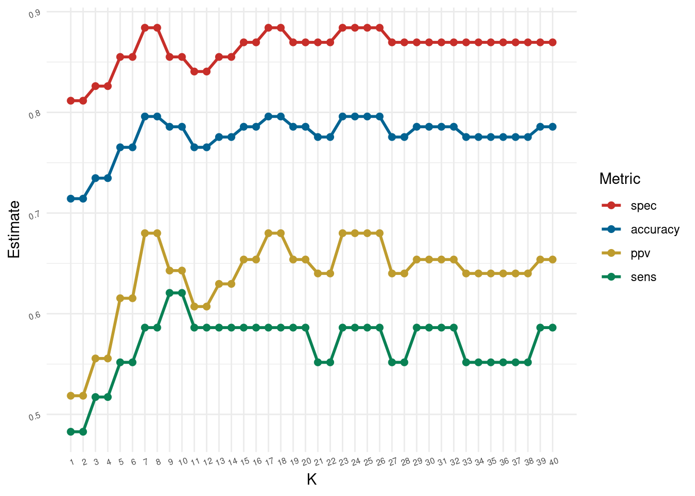

28 Class Activity 22
# load the necessary libraries
library(tidyverse)
library(tidymodels)
library(mlbench) # for PimaIndiansDiabetes2 dataset
library(janitor)
library(parsnip)
library(kknn)
library(ggthemes)
library(purrr)
library(forcats)28.1 Group Activity 1
Load the mlbench package to get PimaIndiansDiabetes2 dataset.
# Load the data - diabetes
data(PimaIndiansDiabetes2)
db <- PimaIndiansDiabetes2
db <- db %>% drop_na() %>% mutate(diabetes = fct_rev(factor(diabetes)))
db_raw <- db %>% select(glucose, insulin, diabetes)- Split the data
75-25into training and test set using the following code.
Click for answer
Answer:
- Follow the steps to train a 7-NN classifier using the
tidymodelstoolkit
Click for answer
Answer:
# define recipe and preprocess the data
db_recipe <- recipe(diabetes ~ ., data = db_raw) %>%
step_scale(all_predictors()) %>%
step_center(all_predictors()) %>%
prep()
# specify the model
db_knn_spec7 <- nearest_neighbor(mode = "classification",
engine = "kknn",
weight_func = "rectangular",
neighbors = 7)
# define the workflow
db_workflow <- workflow() %>%
add_recipe(db_recipe) %>%
add_model(db_knn_spec7)
# fit the model
db_fit <- fit(db_workflow, data = db_train)- Classify the penguins in the
testdata frame.
Click for answer
Answer:
test_features <- db_test %>% select(glucose, insulin)
db_pred <- predict(db_fit, test_features, type = "raw")
db_results <- db_test %>%
select(glucose, insulin, diabetes) %>%
bind_cols(predicted = db_pred)
head(db_results, 6) glucose insulin diabetes predicted
4 89 94 neg neg
7 78 88 pos neg
15 166 175 pos pos
19 103 83 neg neg
32 158 245 pos pos
36 103 192 neg neg28.2 Group Activity 2
Calculate the accuracy, sensitivity, specificity, and positive predictive value by hand using the following confusion matrix.
conf_mat(db_results, truth = diabetes, estimate = predicted) Truth
Prediction pos neg
pos 17 8
neg 12 61Click for answer
Answer:
accuracy(db_results, truth = diabetes,
estimate = predicted)# A tibble: 1 × 3
.metric .estimator .estimate
<chr> <chr> <dbl>
1 accuracy binary 0.796
sens(db_results, truth = diabetes,
estimate = predicted)# A tibble: 1 × 3
.metric .estimator .estimate
<chr> <chr> <dbl>
1 sens binary 0.586
spec(db_results, truth = diabetes,
estimate = predicted)# A tibble: 1 × 3
.metric .estimator .estimate
<chr> <chr> <dbl>
1 spec binary 0.884
ppv(db_results, truth = diabetes,
estimate = predicted)# A tibble: 1 × 3
.metric .estimator .estimate
<chr> <chr> <dbl>
1 ppv binary 0.68
28.3 Extra: Code to recreate the plot in the slides for the diabetes dataset.
Click for answer
Answer:
metrics_for_k <- function(k, db_train, db_test){
db_knn_spec <- nearest_neighbor(mode = "classification",
engine = "kknn",
weight_func = "rectangular",
neighbors = k)
db_knn_wkflow <- workflow() %>%
add_recipe(db_recipe) %>%
add_model(db_knn_spec)
db_knn_fit <- fit(db_knn_wkflow, data = db_train)
test_features <- db_test %>% select(glucose, insulin)
nn1_pred <- predict(db_knn_fit, test_features, type = "raw")
db_results <- db_test %>%
select(diabetes) %>%
bind_cols(predicted = nn1_pred)
custom_metrics <- metric_set(accuracy, sens, spec, ppv)
metrics <- custom_metrics(db_results,
truth = diabetes,
estimate = predicted)
metrics <- metrics %>% select(-.estimator) %>% mutate(k = rep(k,4))
return(list = metrics)
}
optim.results %>%
ggplot(aes(x = k, y = .estimate, color = forcats::fct_reorder2(.metric, k, .estimate ))) +
geom_line(size = 1) +
geom_point(size = 2) +
theme_minimal() +
ggthemes::scale_color_wsj() +
scale_x_continuous(breaks = k) +
theme(panel.grid.minor.x = element_blank(),
axis.text=element_text(size=6, angle = 20))+
labs(color='Metric', y = "Estimate", x = "K") 